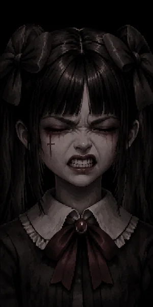
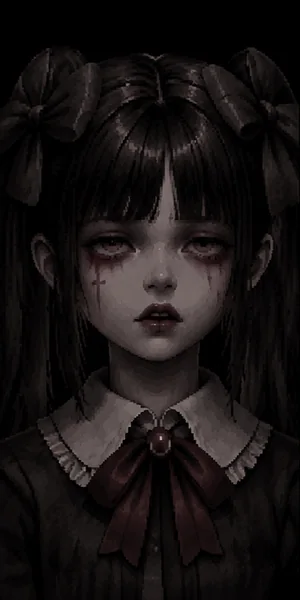

Meeto Games präsentiert — gothic-arena-shooter
 — gothic-arena-shooter
— gothic-arena-shooter
Ein gotischer Ego-Shooter in Arenen über den Kampf ums Leben, in einer Spielzeugwelt aus Plastiksoldaten und Porzellanballerinas.
Über das Spiel
Pogost ist ein schneller Ego-Shooter in Arenen. Gegnerwellen kommen eine nach der anderen, jedes Level bringt Erfahrung und eine Upgrade-Karte, und zwischen den Runs investierst du deine Beute in dauerhafte Verbesserungen.
Die Welt besteht aus Spielzeug, doch die Geschichte dahinter ist ernst: Es geht um den Kampf ums Leben. Der kleine Mito und das Gothic-Mädchen Mina kämpfen jeweils ihren eigenen Kampf, und die Arenen sind der Ort, an dem er stattfindet.
Das Spiel wird mit Unity entwickelt. Die Screenshots zeigen eine frühe Version.
Wellen und Upgrade-Karten
Überlebe Gegnerwellen, steig auf und wähle in jedem Level eine Upgrade-Karte.
Schnelle Bewegung
Dreifachsprung, ein Dash, der dich unverwundbar macht, und ein Bodenstampfer mit Schockwelle.
Waffen mit Wucht
Rückstoß, ein gleitender Verschluss und physische Patronenhülsen mit eigenem Klang.
Gegner, die zerbrechen
Plastiksoldaten verlieren Helme und Arme, und die Teile bleiben in der Arena liegen.
Eigener Soundtrack
Licht und Interface pulsieren im Takt der Musik.
Fortschritt zwischen den Runs
Investiere deine Beute in dauerhafte Upgrades und komm stärker zurück.
Mina






Mina, eine der beiden Hauptfiguren.
Screenshots
Das Spiel ist in Entwicklung
Screenshots und Details können sich bis zum Release noch ändern. Meine Browserspiele kannst du schon jetzt spielen.
Browserspiele